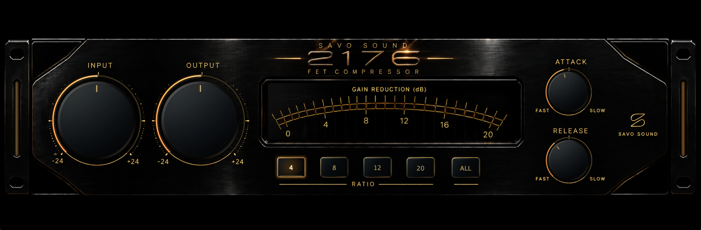

2176 is a modern FET compressor built from the architecture and behaviour of the classic 1176 Rev D, with a redesigned analogue signal path around the compression circuit.
The compressor section was developed from available Rev D schematics and technical documentation, following the original signal path, FET gain-reduction principle and ratio behaviour. The aim was to retain the fast, responsive feedback compression at the heart of the design while allowing the surrounding circuit to take a different direction.
Particular attention was given to the transformer stages. Rather than using generic transformer saturation, the input and output were built as separate models with their own electrical and magnetic behaviour. The input takes inspiration from the wide-bandwidth, high-ratio Lundahl-style transformer design associated with the Avalon VT-737SP, while the output draws from the high-voltage Class-A and custom transformer philosophy of the Rupert Neve Designs 5088.
The result is an input stage that begins to develop subtle transformer character at normal operating levels, paired with an open, high-headroom output stage that progressively adds density and smooth peak rounding as it is driven harder.
Attack and Release retain the fast operating range associated with this type of compressor, but the Release behaviour has been deliberately extended with a two-stage, program-dependent recovery developed for 2176. The initial recovery is followed by a slower secondary stage that becomes more pronounced after deeper or more sustained gain reduction. This allows short transients to recover quickly while heavier compression develops a longer, smoother tail rather than relying on a single fixed release time.
2176 is not a component-for-component emulation of a particular vintage unit. It is a Rev D-inspired FET compressor combining classic feedback compression with a modern approach to the analogue stages and recovery behaviour surrounding it.
Unzip the downloaded file and copy 2176.vst3 to:
~/Library/Audio/Plug-Ins/VST3/Restart your DAW and rescan your plugins if necessary.
DOWNLOADUnzip the downloaded file and copy 2176.vst3 to:
C:\Program Files\Common Files\VST3\Restart your DAW and rescan your plugins if necessary.
DOWNLOAD